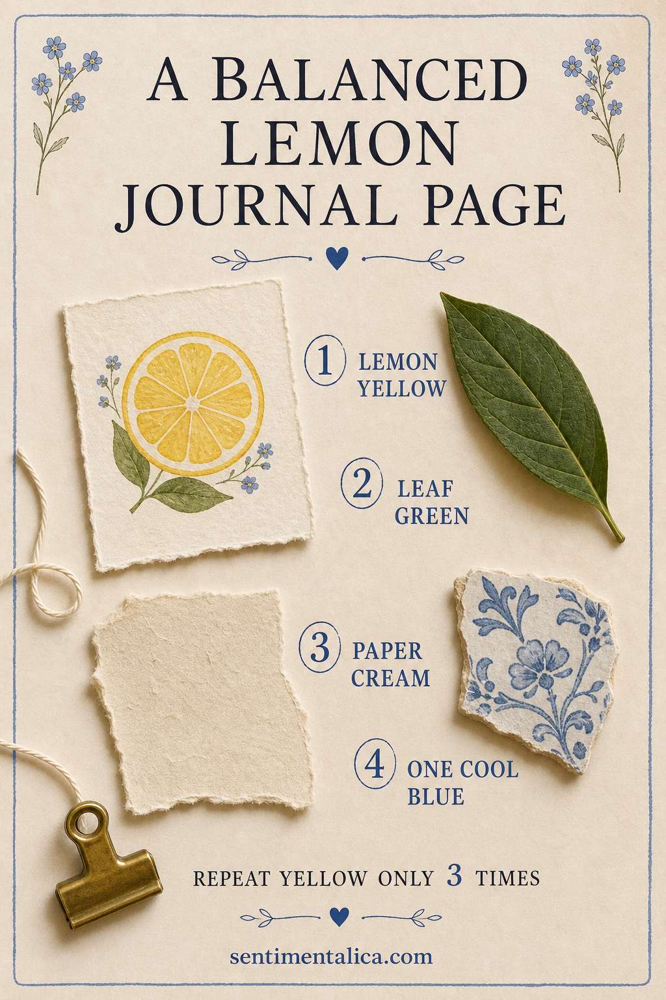
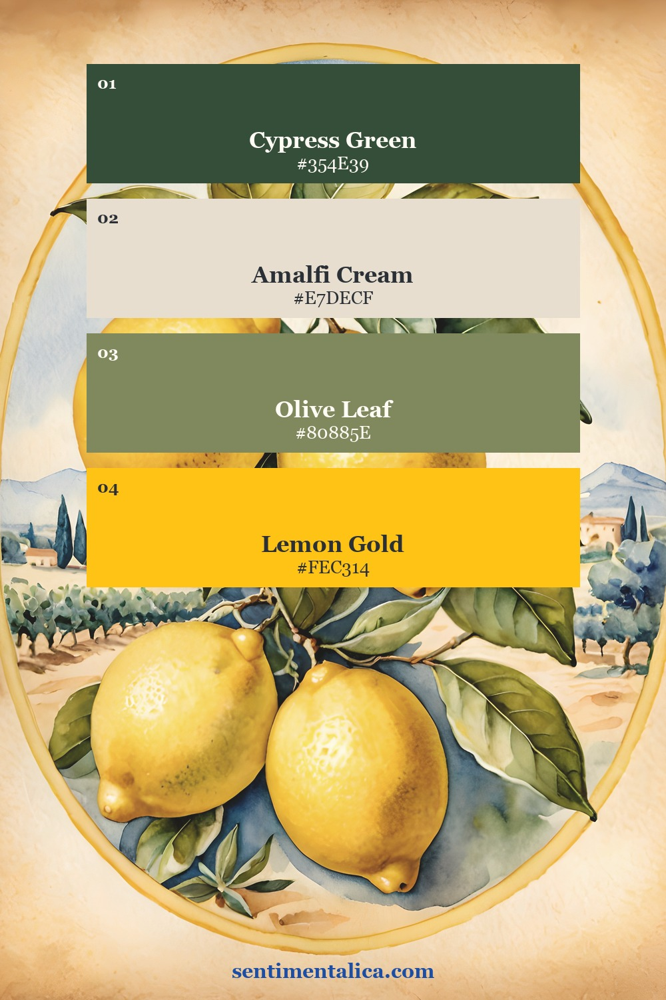
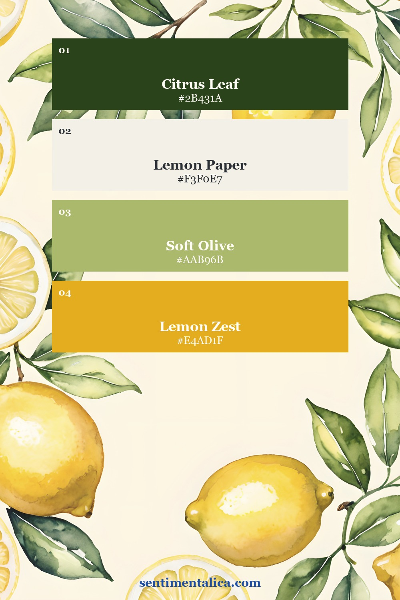
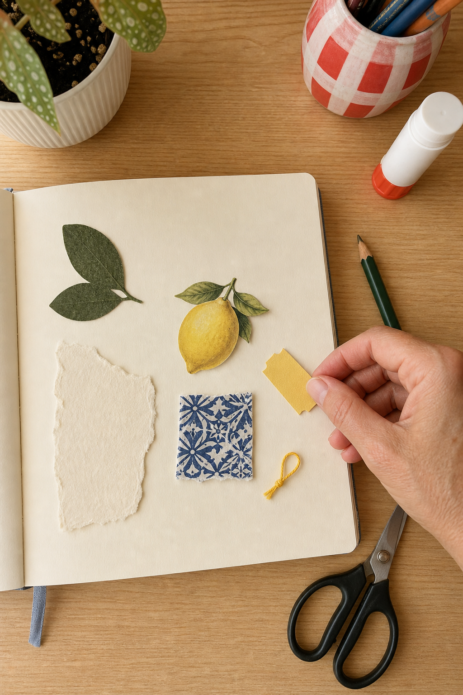
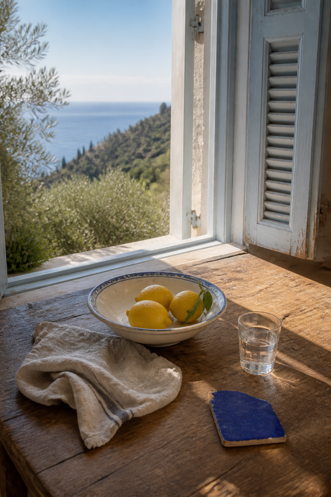
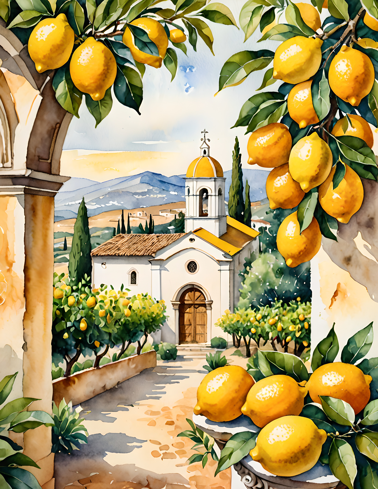
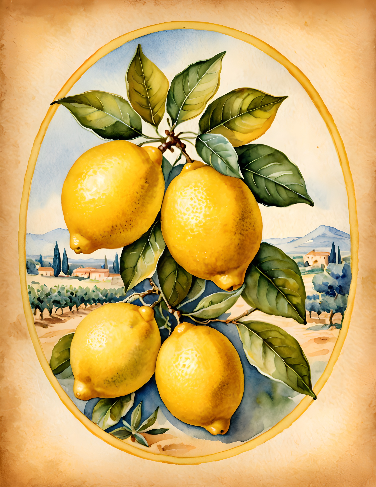
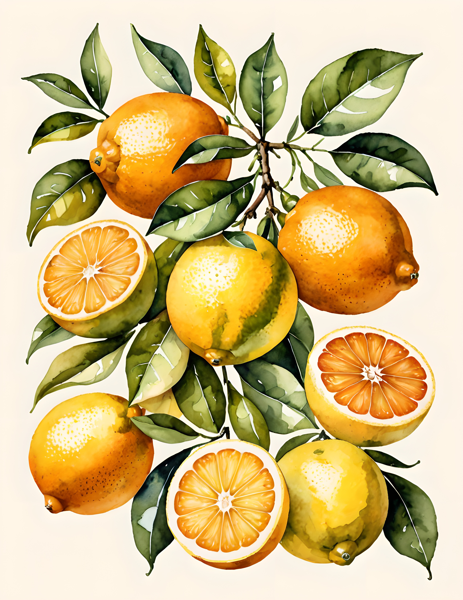

Lemons are an irresistible summer junk journal theme, but bright yellow can take over a page before you notice. Add several lemon images, yellow ribbon, warm paper, and gold details, and every piece begins to compete. A calmer citrus page uses yellow as a signal rather than a background. Give it green, cream, and one cool blue companion, then repeat the yellow only where you want the eye to travel.

Let yellow be the smallest loud color
Yellow attracts attention quickly, so it does not need much physical space. Choose one main lemon image and two much smaller echoes. The echoes might be a ticket-shaped scrap and a loop of thread, a painted dot and a narrow border, or two tiny pieces cut from the same sheet.
Place the three yellow moments in a loose triangle. This moves the eye around the page without creating a solid yellow block. If one piece feels too forceful, make it smaller before adding more decoration elsewhere.
Build the page around cream and leaf green
Cream should do most of the quiet work. Use it for the base page, a torn writing area, or a wide mat beneath the focal image. Deep leaf green gives the lemon a natural anchor and makes the color story feel botanical instead of sugary. One dark leaf can balance a surprisingly bright yellow image.


These two palettes come from real Lemon Grove and Lemon Zest pages. Notice that both leave room for soft paper tones. The lemon color is memorable because it is surrounded by quieter shades, not because it fills every surface.
Add one cool blue interruption
A small piece of cobalt, faded denim blue, or blue-and-white tile pattern stops the palette from feeling uniformly warm. Keep it small and place it near one of the yellow elements. The contrast makes both colors look cleaner.

Do a dry layout before gluing. Count the strong yellow shapes, then photograph the page. If your eye lands on several yellow areas at once, remove one or shrink it. The goal is not a mathematical rule for every page. Three repetitions are a useful editing limit when the theme already has a powerful color.
Use summer memories that are not all visual
A lemon page can hold more than citrus pictures. Record the cold glass in your hand, the smell of peel, the sound of shutters, the shadow of leaves on a table, or the first bite of something sharp and sweet. Add a café receipt, a handwritten recipe fragment, or a blank label for the date if it belongs to your own memory.

The atmosphere image above is also a useful composition map: three lemons together, one cool blue fragment apart, and generous wooden space between them. You can borrow that spacing even when your materials are completely different.
Compare two real lemon directions
Lemon Grove is the more scenic direction, with Italian architecture, orchards, and distant blue landscapes. Lemon Zest is more flexible when you want isolated fruit, botanical pieces, and open cream areas. Both can support the same four-color method without making every page look identical.



Start with the lemon you love most, then make the rest of the page quieter than that image. Yellow provides the sunlight; cream, green, and blue give it somewhere to shine. Find more color-led projects and practical journal ideas in the Sentimentalica journal.